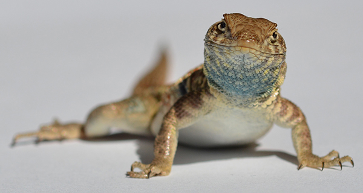
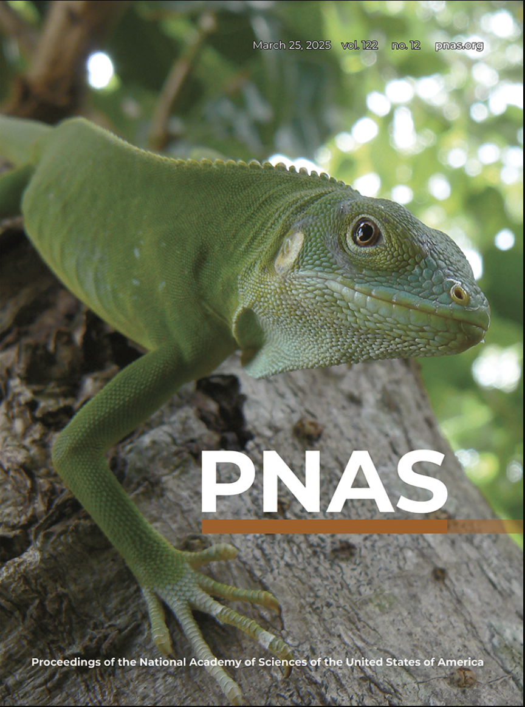
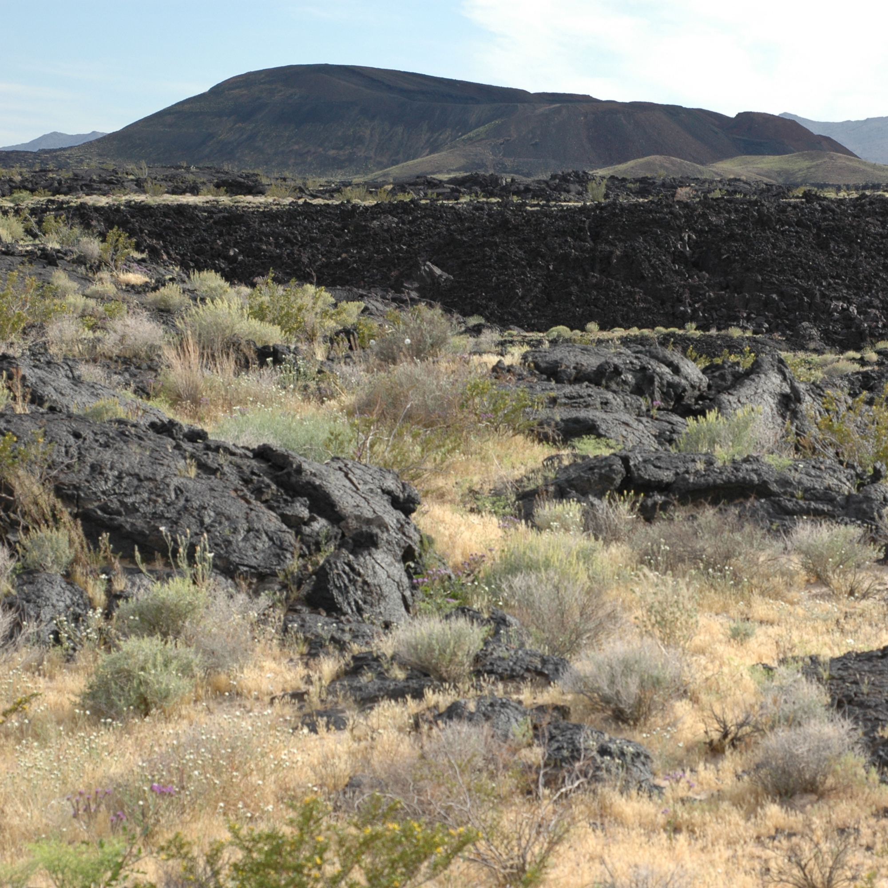
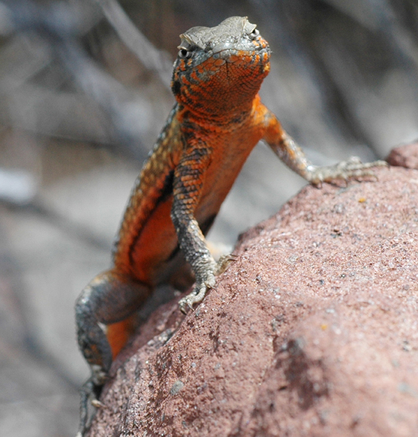

My paper "The genetics, evolution, and maintenance of a biological rock-paper-scissors game" was published on January 1, 2026 in Science. The paper was covered by Carl Zimmer in The New York Times. The paper was also a focus of a commentary in Science. The side-blotched lizard research was also a quiz question on the NPR show Wait Wait Don't Tell Me. I was also interviewed about this research on the NPR show The Best of Our Knowldge.
Side-blotched lizard genomics paper is published!
January 2026

Iguanas raft to Fiji paper
March 2025

The paper "Iguanas rafted more than 8,000 km from North America to Fiji"is published. Simon Scarpetta was the lead author. The paper made the cover of PNAS! U.C. Berkeley issued a press release for the paper.

My paper "Genetic Basis of Adaptation following Plastic Changes in Coloration in a Novel Environment" was published in Current Biology. The paper was covered in a press release, a dispatch in Current biology, and by a story and podcast in Science. In addition, I did a video abstract for the paper.

The paper "Molecular Phylogenetics and the Diversification of Hummingbirds" is published in Current Biology. Jim McGuire was the lead author. U.C. Berkeley issued a press release for the paper.

My paper "Rapid formation of reproductive isolation between two populations of Side-Blotched lizards, Uta stansburiana" is published in Copeia. It is the winner of Copeia’s “Best Paper Young Scholar, Herpetology” Award for 2012.
Morphic speciation paper
2010

My paper "Selective loss of polymorphic mating types is associated with rapid phenotypic evolution during morphic speciation" is published in PNAS. U.C. Santa Cruz issued a press release for the paper.